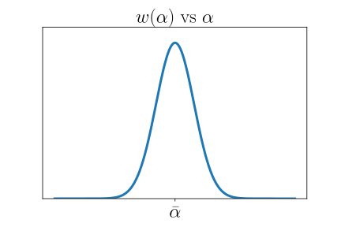
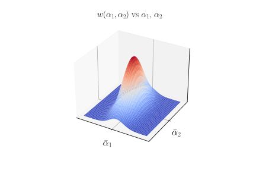

Fluktuatsioonid Gaussi lähenduses
Contents
3.1. Fluktuatsioonid Gaussi lähenduses¶
Kui vaadeldav süsteem on termodünaamilises tasakaalus, siis selle termodünaamilised karakteristikud omandavad väärtusi, mis on harilikult väga lähedased vastavatele keskväärtustele. Siiski on termodünaamilises tasakaalus olemas nullist erinev tõenäosus selleks, et mingi süsteemi iseloomustava suuruse väärtus antud ajahetkel ei lange kokku tasakaalulise väärtusega. Realselt ostsillerub see suurus ajas juhuslikult väikese amplituudiga oma tasakaalulise väärtuse ümber ning selle juhuslikku kõrvalekaldumist tasakaalulisest väärtusest nimetakse fluktuatsiooniks.
Olgu meil mingi suurus \(a\), mis iseloomustab kas süsteemi tervikuna või siis süsteemi osa. Selle suuruse tasakaalulist väärtust tähistame \(\bar a\). Suuruse \( a\) fluktuatsiooniks on vahe \(\Delta a= a-\bar a\).
3.1.1. Boltzmanni printsiip¶
Fluktuatsioonide poolfenomenoloogiline kirjeldamine lähtub A. Einsteini valemist fluktuatsiooni tõenäosustiheduse jaoks
Siin \(S( a)\) on entroopia mittetasakaalulise seisundi jaoks, mis on tekkinud tasakaalulise oleku fluktuatsioonina. Kordaja \(A\) tagab tõenäosustiheduse normeeringu. Valemi kohaselt on \(w( a)d a\) tõenäosus selleks, et parameetri väärtused on vahemikus \([ a, a+d a]\).
Valemi tuletamisel on kasutatud Boltzmanni poolt leitud seos entroopia ja mikrokanoonilise jaotuse vahel, mis oli üldistatud fluktuatsioonidele, \(S( a_2)-S( a_1)=k_\mathrm{B}\ln\frac{w( a_2)}{w( a_1)}\). Üldistuse kohaselt ilmub entroopia ja tõenäosuse vahel põhimõtteline seos. Kui kinnine süsteem asub mittetasakaalulises olekus, siis paratamatult ja iseenesest läheb see relaksatsiooni aja jooksul tasakaaluolekusse, millega kaasneb süsteemi entroopia kasvamine kuni maksimaalse väärtuseni. Samal ajal näeme, et süsteem püüab selles protsessis üle minna vähem tõenäolisest olekust tõenäolisemasse olekusse.
Entroopia seos tõenäosusega muudab ka kategoorilise entroopia kasvu printsiibi tõenäosusliku tähendusega printsiibiks: isoleeritud süsteemis on kõige tõenäolisemad sellised protsessid, mille käigus süsteemi entroopia kasvab või jääb muutumatuks (süsteemi oleku tõenäosus suureneb, või jääb muutumatuks).
3.1.2. Üks fluktueeruv suurus¶
Suuruse \( a\) tasakaalulise väärtuse korral on süsteemi entroopia maksimaalne \(S( a)|_{ a=\bar a}=\textnormal{max}\). See tähendab, et kehtib funktsiooni \(S\) maksimumi tingimus
Oletame, et fluktuatsioonid on väikesed ja seega kehtib järgmine \(S( a)\) reaksarendus \(\Delta a\) astmete järgi
Järelikult on fluktuatsiooni tõenäosustihedus (3.1) kujul
Paneme tähele, et kehtib \(w\sim e^{\Delta S/k_\mathrm{B}}\), kus \(\Delta S=S( a)-S(\bar a)\) on entroopia kõrvalekalle tasakaaluväärtusest seoses \( a\) fluktuatsiooniga. Kuigi me eeldasime, et fluktuatsioonid \(\Delta a\) on väikesed võime me siin integreerida vahemikus \(-\infty\ldots+\infty\), kuna integraalialune funktsioon kahaneb väga kiiresti \(|\Delta a|\) kasvades. Selline integreerimine annab
kus viimases võrduses on kasutatud Gaussi integraali valem. Saadud jaotust
nimetatakse Gaussi jaotuseks, vt pilti.
{kind=link}
Fluktuatsiooni keskväärtuste jaoks saame
Näeme, et Gaussi jaotus on täielikult määratud, kui on teada kaks keskväärtust \(\langle a\rangle\) ja \(\left\langle(\Delta a)^2\right\rangle\).
3.1.3. Mitu fluktueeruvat suurust¶
Võtame nüüd vaatluse alla mitme suuruse \( a_1, a_2,\ldots a_n\equiv\{ a\}\) samaaegsed fluktuatsioonid \(\Delta a_1,\Delta a_2,\ldots\Delta a_n\equiv\{\Delta a\}\). Eeldame, et fluktuatsioonid on väikesed. Pidades silmas entroopia maksimaalsust termodünaamilise tasakaalu seisundis
esitame fluktuatsioonidest põhjustatud süsteemi entroopia muutuse reaksarendusena fluktuatsioonide astmete järgi
kus
Boltzmanni printsiibi (3.1) üldistades meie juhule saame fluktuatsioonide tõenäosustihedust kujul
Oluline erinevus ühe fluktueeruva suuruse juhuga on see, et eksponent sisaldab segaliikmeid, mis vastavad summa \(i\neq j\) elemendile.
Arvuvame kõigepealt normeeritava integraali. Selleks kasutame lineaarteisendust
nii, et see viiks ruutvormi \(\sum_{i,j}\beta_{ij}\Delta a_i\Delta a_j\) diagonaalsele kujule
Selleks peavad teisenduse koefitsiendid rahuldama tingimust
Seoses \(\Delta a\to\Delta\tilde a\) teisendusega muutub ka diferentsiaalide korrutist
Jakobiaani \(\textnormal{det}[u_{ij}]\) leidmiseks paneme tähele, et kehtib tingimus (3.3), mille kohaselt
seega \(\textnormal{det}[u_{ij}]=1/\sqrt{\textnormal{det}[\beta_{ij}]}\). Siinjuures tingimus \(\textnormal{det}[\beta_{ij}]>0\) tagab entroopia maksimumi piisava tingimuse (ühe fluktueeruva suuruse korral on vastavaks tingimuseks \(\beta>0\)). Järelikult saame normeeritava integraali jaoks
Viimase võrduse korral oli jälle kasutatud Gaussi integraali valem.
Tõenäosustihedusel on meil nüüd lõplik kuju
Saadud tulemus on Gaussi jaotus mitme fluktueeruva suuruse jaoks, vt. pilti.
{kind=link}
Selle jaotuse alusel võib leida, et
kus \(\beta^{-1}_{ij}\) on koefitsientidest \(\beta_{ij}\) moodustatud maatriksi pöördmaatriksi elemendid. Kui \(\beta^{-1}_{ij}=0\), siis \(\langle\Delta a_i\Delta a_j\rangle=0\), ehk fluktuatsioonid \(\Delta a_i\) ja \(\Delta a_j\) on statistiliselt sõltumatud.
Toome sisse veel termodünaamilise jõu definitsiooni \(X_i=-\frac{\partial S}{\partial a_i}\). See jõud tekkib süsteemis seoses selle kõrvalekallega tasakaaluasendist. Kasutades Gaussi lähendust saame \(X_i=\sum_j\beta_{ij}\Delta a_j\) ning
Ülesanne
Näidake, et Gaussi lähenduses kehtib \(\left\langle X_i\Delta a_{k}\right\rangle = k_{\mathrm{B}}\delta_{ik}\) ja \(\left\langle X_{k}X_{i}\right\rangle = k_{\mathrm{B}}\beta_{ik}\).